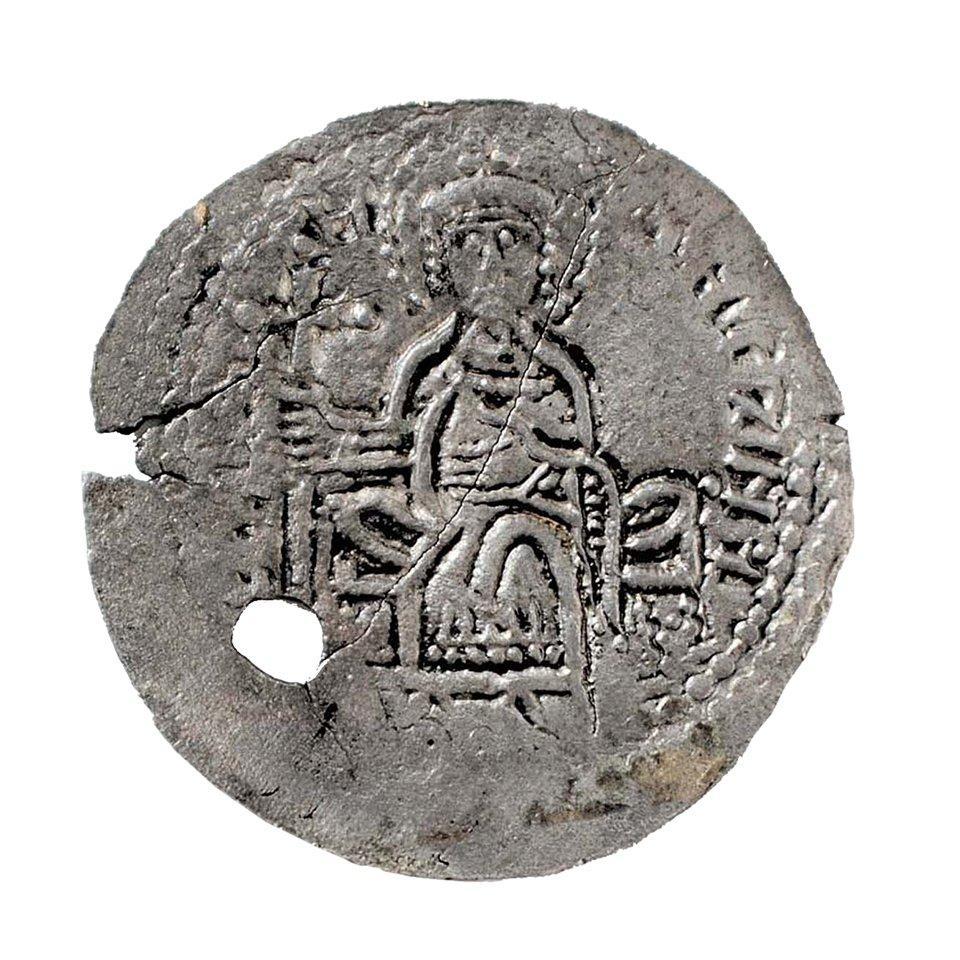

Вироби
Г1. Кепка зі шкіряним патчем
Лазер + текстиль
Кепка-«dad cap» кольору вицвілої оливи з круглим шкіряним патчем, пришитим спереду. На патчі — лазерне гравіювання грифона в обрамленні плетеного бордюру (за Сахнівською діадемою, XII ст.).


🧢
Генероване зображення
буде додано після генерації
Г2. Подарунковий набір
Лазер + текстиль
Набір у крафтовій коробці з деревною стружкою: пісочна футболка з принтом срібника Володимира, шкіряний браслет із гравійованими грифонами, дерев'яний магніт-монета, картка з описом. Усі дизайни за верифікованими референсами.

🎁
Генероване зображення
буде додано після генерації
Джерело: Spadok.org.ua — Браслети-наручі, НМІУ — Срібник Володимира
Г3. Сумка з аплікацією
Лазер + текстиль
Темна бавовняна сумка-тоут із нашитою аплікацією: силует грифона, вирізаний лазером зі світло-коричневої шкіри, пришитий контрастною ниткою. За мотивами Сахнівської діадеми.
👜
Генероване зображення
буде додано після генерації
Джерело: Spadok.org.ua — Сахнівська діадема